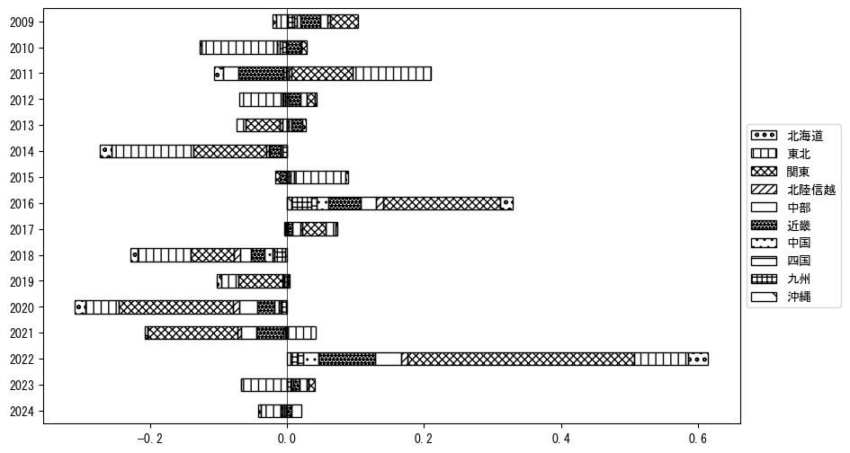

-
トップ
-
青森県
青森県
１．延べ宿泊者（総数）の推移
時系列グラフ
 図１：青森県内の従業員数100人以上の宿泊施設での延べ宿泊者数（国外、居住地不詳を含む総数）。
図１：青森県内の従業員数100人以上の宿泊施設での延べ宿泊者数（国外、居住地不詳を含む総数）。
基本統計量
表１：従業員数100人以上の宿泊施設での延べ宿泊者の総数（国外、および居住地不詳を含む）に関する基本統計量。単位は人泊。平均は１か月あたりの平均値を表す。図１に対応。
| 2008年 |
45,189 |
10,967 |
26,972 (12月) |
59,231 (8月) |
| 2009年 |
42,601 |
11,491 |
30,878 (12月) |
64,601 (8月) |
| 2010年 |
45,129 |
10,182 |
33,806 (1月) |
63,578 (8月) |
| 2011年 |
42,591 |
12,576 |
18,279 (4月) |
61,811 (8月) |
| 2012年 |
44,495 |
15,738 |
22,971 (4月) |
73,373 (8月) |
| 2013年 |
38,894 |
17,116 |
16,294 (1月) |
67,394 (8月) |
| 2014年 |
32,848 |
14,164 |
15,289 (1月) |
59,439 (8月) |
| 2015年 |
29,034 |
5,604 |
22,207 (2月) |
39,848 (8月) |
| 2016年 |
40,574 |
13,878 |
23,568 (12月) |
63,229 (8月) |
| 2017年 |
46,651 |
15,425 |
23,938 (1月) |
71,932 (8月) |
| 2018年 |
40,153 |
11,113 |
26,736 (12月) |
60,822 (8月) |
| 2019年 |
36,276 |
7,576 |
25,054 (12月) |
51,118 (8月) |
| 2020年 |
20,816 |
12,607 |
1,502 (5月) |
36,211 (10月) |
| 2021年 |
15,993 |
6,707 |
8,303 (2月) |
25,029 (12月) |
| 2022年 |
27,399 |
9,330 |
12,595 (2月) |
41,471 (8月) |
| 2023年 |
32,681 |
6,671 |
25,431 (2月) |
43,306 (8月) |
２．宿泊者数の重心（年平均の推移）
図２：青森県内の従業員数100人以上の宿泊施設での宿泊者数（国外、居住地不詳を除く）の重心（年平均の推移）。
全画面表示
重心の前年平均からの移動距離と方位、および緯度・経度
表２：重心の前年平均からの移動距離と方位、および緯度・経度。図２に対応。
| 2008年 |
— |
— |
38.2181 |
139.7437 |
| 2009年 |
南西 |
41.1km |
37.9188 |
139.4689 |
| 2010年 |
南南西 |
45.8km |
37.5304 |
139.2934 |
| 2011年 |
北東 |
57.7km |
37.8593 |
139.8006 |
| 2012年 |
南南西 |
29.7km |
37.6286 |
139.6309 |
| 2013年 |
西南西 |
6.0km |
37.6044 |
139.5699 |
| 2014年 |
南南西 |
16.4km |
37.4787 |
139.4734 |
| 2015年 |
北北東 |
23.8km |
37.6887 |
139.5285 |
| 2016年 |
南西 |
63.3km |
37.2305 |
139.1026 |
| 2017年 |
南 |
3.7km |
37.1973 |
139.0997 |
| 2018年 |
東南東 |
16.8km |
37.1369 |
139.2726 |
| 2019年 |
南西 |
11.0km |
37.0686 |
139.1825 |
| 2020年 |
北北東 |
62.2km |
37.5696 |
139.4980 |
| 2021年 |
北北東 |
52.9km |
38.0264 |
139.6707 |
| 2022年 |
南南西 |
88.7km |
37.3061 |
139.2362 |
| 2023年 |
南南西 |
39.6km |
37.0089 |
138.9894 |
運輸局別延べ宿泊者数
時系列（年平均）
図３：青森県内の従業員数100人以上の宿泊施設での１か月あたり平均宿泊者数（国外、居住地不詳を除く）の運輸局別内訳。
寄与度（前年からの変化率に対する）

図４：青森県内の従業員数100人以上の宿泊施設での運輸局別宿泊者数（国外、居住地不詳を除く）から求めた寄与度。
３．宿泊者数の重心（月別）
図５：青森県内の従業員数100人以上の宿泊施設での宿泊者数（国外、居住地不詳を除く）の重心（月別）。観測期間は2008年1月から2023年12月まで。
全画面表示
全期間（2008年1月～2023年12月）の平均と月別平均の比較
表３：全期間の平均から月別平均までの移動距離と方位、および緯度・経度。図５に対応。
| 全期間 |
— |
— |
37.5295 |
139.4101 |
| 1月 |
北北東 |
63.8km |
38.0300 |
139.7656 |
| 2月 |
北北東 |
25.9km |
37.7263 |
139.5683 |
| 3月 |
北北東 |
40.1km |
37.8321 |
139.6593 |
| 4月 |
西北西 |
14.0km |
37.5708 |
139.2602 |
| 5月 |
南西 |
31.2km |
37.3352 |
139.1558 |
| 6月 |
西 |
14.6km |
37.5252 |
139.2444 |
| 7月 |
南 |
20.8km |
37.3436 |
139.3827 |
| 8月 |
南 |
61.6km |
36.9787 |
139.3258 |
| 9月 |
南南西 |
46.3km |
37.1359 |
139.2355 |
| 10月 |
南南西 |
68.4km |
37.0042 |
139.0055 |
| 11月 |
北北東 |
18.0km |
37.6793 |
139.4894 |
| 12月 |
北北東 |
82.2km |
38.1921 |
139.8282 |
運輸局別延べ宿泊者数
月別平均（2008年1月～2023年12月）
図６：青森県内の従業員数100人以上の宿泊施設での宿泊者数（国外、居住地不詳を除く）の運輸局別内訳（月別）。
寄与度（全期間の平均から月別平均への変化率に対する）
 図７：青森県内の従業員数100人以上の宿泊施設での運輸局別宿泊者数（国外、居住地不詳を除く）から求めた寄与度（月別）。
図７：青森県内の従業員数100人以上の宿泊施設での運輸局別宿泊者数（国外、居住地不詳を除く）から求めた寄与度（月別）。
４．データのダウンロード
出典：観光庁「宿泊旅行統計調査」に収録された「施設所在地、居住地別延べ宿泊者数（従業員数100人以上の施設）」
国土地理院「白地図（地理院タイル）」（図２と図５）